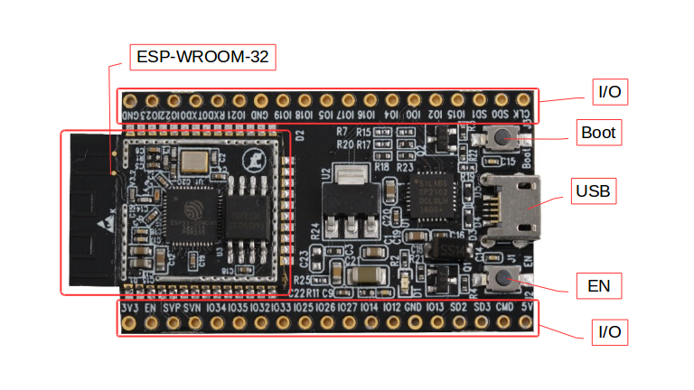

1. Подключите ESP32 по USB
Просто подключите ESP32 USB-кабелем к компьютеру. ESP Web Tools сам переведёт устройство в режим прошивки.
2. Выберите версию прошивки
Прошивки собираются автоматически из тегированных релизов. Подробнее на GitHub →
3. Прошейте устройство
Не получается? Проверьте

Самое частое — кабель. Многие USB-кабели предназначены только для зарядки и не передают данные. Определить такой кабель просто: подключите через него телефон к компьютеру. Если телефон не появляется как устройство — кабель зарядный, не подходит. Возьмите другой, желательно от телефона или жёсткого диска.
Плата не определяется компьютером. Windows часто требует установки драйвера для USB-преобразователя на плате ESP32. Скачайте и установите драйвер для CP210x или CH340 (зависит от модели платы). После установки переподключите плату. Linux и macOS определяют плату автоматически — драйверы не нужны.
Плата видна, но прошивка не начинается. Автосброс мог не сработать. Переведите ESP32 в режим прошивки вручную — это просто:
- Зажмите и удерживайте BOOT
- Коротко нажмите EN и отпустите
- Отпустите BOOT
Повторите попытку прошивки.
Браузер не показывает плату. WebSerial работает только в Google Chrome, Edge или Opera. Firefox и Safari не поддерживаются. Если у вас Chromium на Linux — откройте chrome://flags/#enable-experimental-web-platform-features и включите флаг, затем перезапустите браузер.
4. Настройте WiFi
После перезагрузки ESP32 создаст точку доступа:
ot-gateway-setup-XXXXXX
Подключитесь к ней с телефона или ноутбука — страница настройки откроется автоматически.